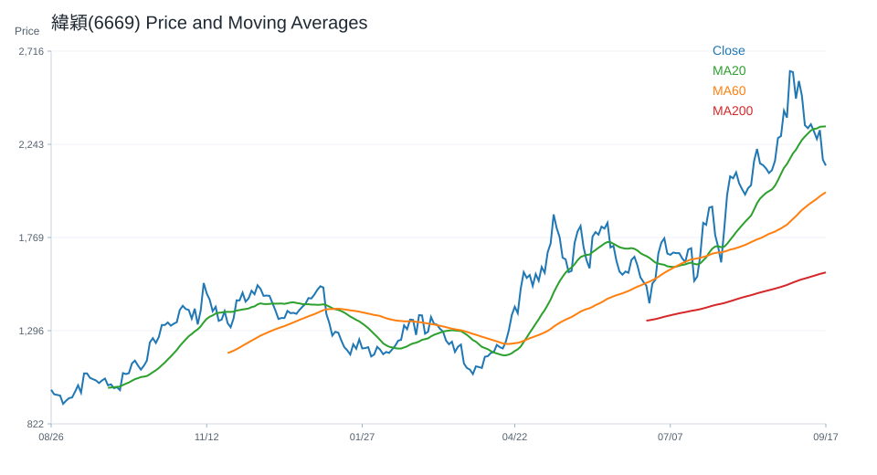
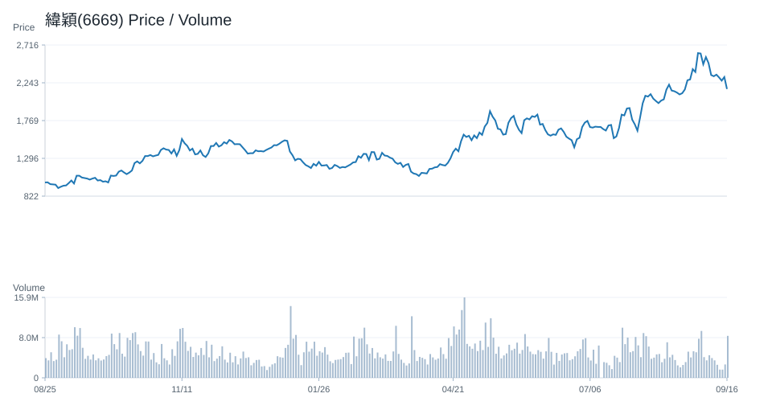
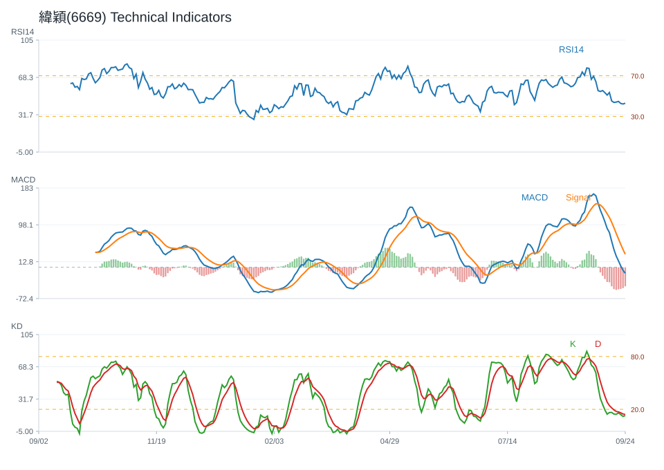
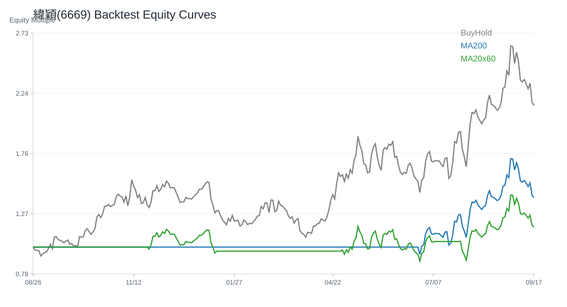

20 日
-4.72%60 日
38.55%觀察等級
積極觀察市場資料
2026-07-08- 成交量996,249.00
- 20 日均線4,879.00
- 60 日均線4,927.42
- 200 日均線4,218.12
- 距 52 週高點-12.78%
- 距 52 週低點108.68%
技術指標
Python 計算- RSI1452.23
- MACD hist38.27
- KD K/D73.32 / 66.36
- ADX13.71
- 布林上緣5,373.92
- 布林下緣4,384.08
量價與事件
規則式分析- 量價型態量縮整理
- 量價分數0
- 20 日量比0.61
- OBV 20 日變化-9.64%
- 事件偏向資料不足
- 事件分數資料不足
研究訊號與觀察等級
不是買賣建議積極觀察；研究訊號 強烈偏多，分數 6。
多項量化與事件條件同時偏正向，適合列為優先研究名單。
- 60 日趨勢偏強
- 站上 20 日均線
- 站上 200 日均線
- RSI 位於中性偏強區
- MACD histogram 為正
- KD 偏多但未過熱
- 量價型態：量縮整理
- 價格震盪不大且成交量偏低
回測摘要
歷史資料研究| 策略 | CAGR | Sharpe | 最大回撤 | 勝率 | 交易次數 |
|---|---|---|---|---|---|
| 價格高於 200 日均線 | 43.72% | 1.04 | -46.62% | 50.56% | 7 |
| 20/60 日均線交叉 | 35.47% | 0.91 | -36.99% | 49.70% | 7 |
| 買進持有 | 65.83% | 1.20 | -47.05% | 49.79% | 1 |
圖表
價格 / 量價 / 技術 / 回測緯穎(6669) 價格均線

緯穎(6669) 量價關係

緯穎(6669) 技術指標

緯穎(6669) 回測
